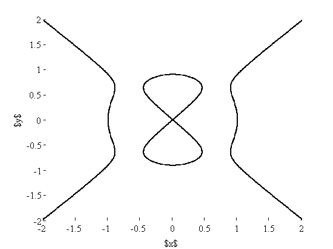

GAIO demo: Computing implicitely defined manifolds
Definition of the manifold
Here is the Devils's curve:
a = 0.9; b = 1; H = @(x) x(:,1).^2.*(x(:,1).^2-b^2) - x(:,2).^2.*(x(:,2).^2-a^2);
Preparations
n = 20; x = linspace(-1,1,n)'; [XX,YY] = meshgrid(x,x); X = [ XX(:) YY(:) ]; % sample points in the unit square c = [0 0]; r = [2 2]; t = Tree(c, r); % the box collection
Computing the manifold by a subdivison algorithm
dim = t.dim; depth = 18; hit = 1; sd = 8; % define some flags for d = 1:depth, t.set_flags('all', sd); % flags all boxes for subdivision t.subdivide; % subdivide all flaged boxes b = t.first_box(-1); % loop over all leaves of the tree while (~isempty(b)) c = b(1:dim); r = b(dim+1:2*dim); % center and radius of the current box p = X*diag(r) + ones(size(X))*diag(c); % sample points in the current box if min(sign(H(p)))*max(sign(H(p))) < 0 % check whether box intersects the manifold t.set_flags(c, hit); % if so, flag box end b = t.next_box(-1); end t.remove(hit); % remove all *non* flaged boxes end
Plot
boxplot2(t); xlabel('$x$'); ylabel('$y$');
Cleanup
delete(t);